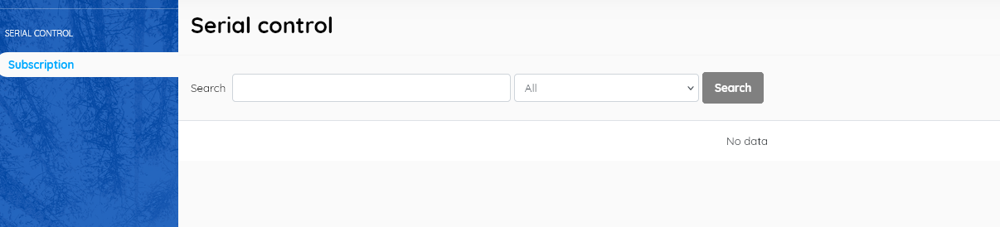
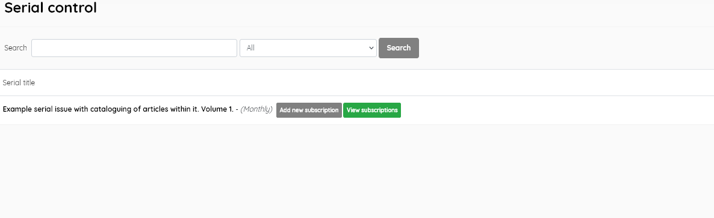
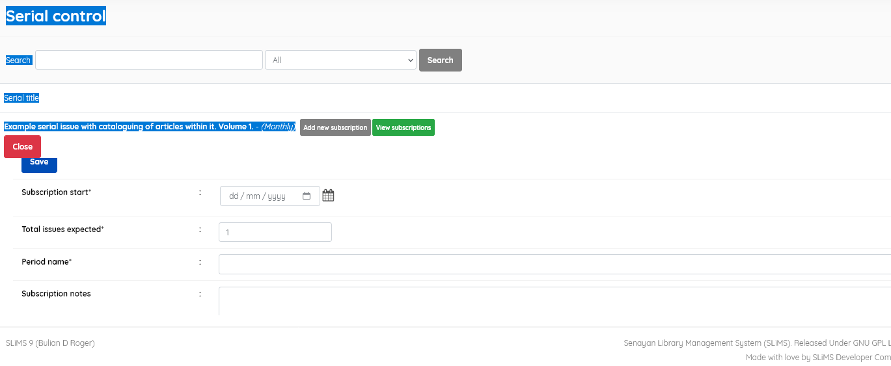

The Serial Control Module will run if bibliographic data is
subscribed for periodical titles.
If there is no bibliographic data in a table that indicates the
frequency, this functionality will not work and the screen will look
like below:

serial_control1
The information that distinguishes between magazine bibliographic
data and other document types is the frequency/time the serial is
published.
When there is frequency data the screen will show the details of the
serial titles, similar to below

serial_control2
An option then exists to Add new subscription, and to enter
subscription information.

serial_control3
That information is:
Subscription Start: fill in the date the subscription will
start to be received at the library.
Total Exemplar Expected: enter the total number you expect
to receive in a period of a subscription. E.g to subscribe for a year on
a monthly basis insert 12.
Period Name: Name the subscription period to provide
differentiation between periods. Also give a name to distinguish copy
subscription one, a second subscription, and so on.
Subscription Notes: Insert important or useful notes on the
subscription.
GMD: if necessary, replace it with the appropriate GMD of
the item to be subscribed